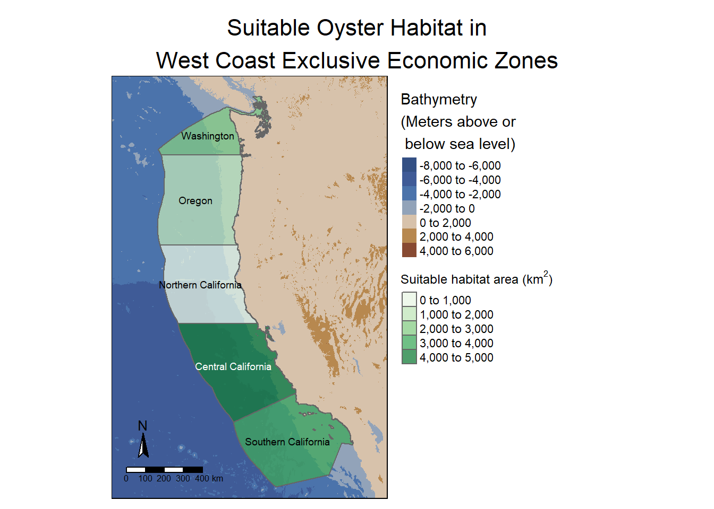
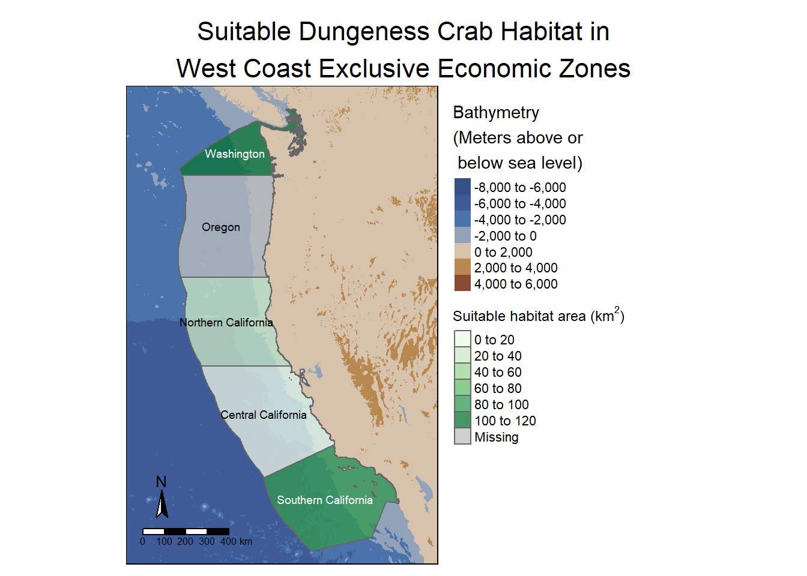
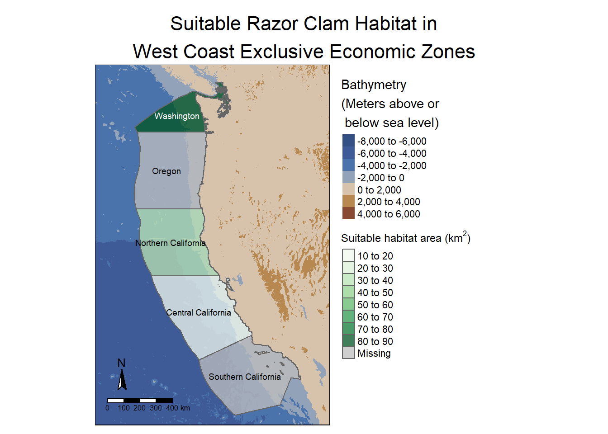

Code
# Load libraries
library(sf)
library(here)
library(terra)
library(tmap)
library(tidyverse)
library(viridisLite)
library(RColorBrewer)
library(kableExtra)
library(testthat)
library(patchwork)
library(testthat)TBD
The West Coast of the United States has five Exclusive Economic Zones (EEZ). An EEZ is a maritime zone that extends up to 200 nautical miles (about 370 kilometers) from a country’s coastline. These zones can be analyzed to determine suitable locations for marine aquaculture. By using geospatial data on sea surface temperature (SST) and bathymetry (depth), we can identify areas within these zones that meet the environmental requirements for aquaculture of individual species. This project aims to develop a map of the suitable habitat areas for Oysters. We will also build a function that will be capable of assessing potential sites for any species based on preferred SST and depth, and creating a map for them, contributing to the sustainable growth of marine aquaculture.
# Load libraries
library(sf)
library(here)
library(terra)
library(tmap)
library(tidyverse)
library(viridisLite)
library(RColorBrewer)
library(kableExtra)
library(testthat)
library(patchwork)
library(testthat)# Read in data
west_coast_eez <- read_sf(here("data", "wc_regions_clean.shp"))
depth <- terra::rast(here("data", "depth.tif"))# Compile all our SST rasters into one object
sst_files <- list.files(here("data"),
pattern = "average",
full.names = TRUE)
# Read in sst data and store as a raster stack
sst_stack <- terra::rast(sst_files)
# Add labels to the raster layers
names(sst_stack) <- c("sst2008", "sst2009", "sst2010", "sst2011", "sst2012")
# # Preliminary plot
# plot(sst_stack)# Confirm that the two raster datasets have the same CRS
if(crs(depth) == crs(sst_stack)) { # Raster data vs raster data
print("Coordinate reference systems match.")
} else{
warning("Updating 'sst_stack' coordinate reference system to match 'depth.'")
sst_stack <- project(sst_stack, crs(depth)) # Project data to match
}
# Confirm that the vector dataset has the same CRS as the raster dataset
if(st_crs(west_coast_eez) == crs(depth)) { # Vector data vs raster data
print("Coordinate reference systems match")
} else{
warning("Updating 'west_coast_eez' coordinate reference system to match 'depth'.")
west_coast_eez <- st_transform(west_coast_eez, st_crs(depth)) # Transform data to match
}# Confirm that any conversions were successful with a test
test_that("CRS of all objects are the same", {
# Check if CRS of sst_stack matches depth
expect_identical(crs(depth), crs(sst_stack),
info = "CRS of 'sst_stack' does not match 'depth'.")
# Check if CRS of west_coast_eez matches depth
expect_identical(st_crs(depth), st_crs(west_coast_eez),
info = "CRS of 'west_coast_eez' does not match 'depth'.")
})Test passed 😀# Find average temperature from 2008-2012
mean_sst <- app(sst_stack, fun = mean)
# Convert units from Kelvin to Celsius
mean_sst <- mean_sst - 273.15# Crop depth to match the geographic extent of sst
depth_crop <- crop(depth, mean_sst)
# Re-sample depth to match the resolution of sst
depth_resample <- resample(depth_crop, y = mean_sst, method = "near")# Stack the two rasters to confirm they are compatible
depth_sst_stack <- c(depth_resample, mean_sst)
# Confirm they have the same resolution, extent, and CRS
if(all(terra::res(depth_resample) == terra::res(mean_sst))) {
if(terra::crs(depth_resample) == terra::crs(mean_sst)) {
if(terra::ext(depth_resample) == terra::ext(mean_sst)){
print("All match")
}else{
stop("extenet does not match")
}
}else{
stop("CRS does not match")
}
}else{
stop("Resolution does not match")
}[1] "All match"Research has shown that oysters need the following conditions for optimal growth:
# Create sst reclassification matrix
rcl_sst <- matrix(c(-Inf, 11, NA, # min temperature
11, 30, 1,
30, Inf, NA), # max temperature
ncol = 3, byrow = TRUE)
# Use reclassification matrix to reclassify sst raster
reclass_sst <- classify(mean_sst, rcl = rcl_sst)
# Create depth reclassification matrix
rcl_depth <- matrix(c(-Inf, -70, NA, # min depth
-70, 0, 1,
0, Inf, NA), # max depth
ncol = 3, byrow = TRUE)
# Use reclassification matrix to reclassify depth raster
reclass_depth <- classify(depth_resample, rcl = rcl_depth)# Multiply reclassified matrices to find cells that each have a 1
suitable_sst_depth <- lapp(c(reclass_sst, reclass_depth), fun = "*") # Use multiply function. Only cells that both have a 1 will remain a 1# Create a raster of the eez data
west_coast_eez_raster <- rasterize(west_coast_eez,
suitable_sst_depth,
field = "rgn") # Transfer the region variable # Quantify area of grid cells suitable for oysters
suitable_area <- cellSize(suitable_sst_depth, # Area that satisfies depth and temperature parameters
mask = TRUE, # Keep NAs in output
unit = "km") # Match units to eez units
# Sum suitable area by eez region
suitable_eez_area <- zonal(suitable_area,
west_coast_eez_raster,
fun = "sum",
na.rm = TRUE)
# Display values in a table
kable(suitable_eez_area, digits = 2,
col.names = c("Region","Suitable Area km^2"), # Use LaTex to render the exponent as superscript
caption = "Suitable Area by Exclusive Economic Zone Region") %>%
kable_styling(bootstrap_options = "striped",
position = "center")| Region | Suitable Area km^2 |
|---|---|
| Central California | 4069.57 |
| Northern California | 178.02 |
| Oregon | 1074.26 |
| Southern California | 3508.19 |
| Washington | 2378.28 |
# Combine the eez suitable area data with our original eez dataframe
eez_join <- left_join(west_coast_eez, suitable_eez_area, by = "rgn")
# Create a color palette with colorbrewer for bathymetrry data
my_palette2 <- rev(c('#693829FF', '#894B33FF', '#A56A3EFF', '#CFB267FF', '#D9C5B6FF', '#9CA9BAFF', '#5480B5FF', '#3D619DFF', '#405A95FF', '#345084FF'))
tm_shape(depth_crop) +
tm_raster(palette = my_palette2,
title = "Bathymetry\n(Meters above or\n below sea level)",
alpha = 1,
stretch.palette = FALSE,
midpoint = 0, #### SHOULD THIS BE NA??? ####
legend.show = TRUE) +
tm_shape(eez_join,
raster.downsample = TRUE) + # Re-sample to lower resolution
tm_polygons(col = "area",
palette = "Greens",
alpha = 0.75,
title = expression("Suitable habitat area (km"^2*")")) + # Write units as an expression
tm_text("rgn",
xmod = -0.2,
size = 0.6,) + # Label each region
tm_compass(size = 1.5,
position = c("left", "bottom")) +
tm_scale_bar(position = c("left", "bottom")) +
tm_layout(legend.outside = TRUE,
frame = TRUE,
main.title = "Suitable Oyster Habitat in\nWest Coast Exclusive Economic Zones",
main.title.size = 1.35,
main.title.position = c("center", "top"),
inner.margins = c(0, 0, 0, 0)) # Fit map to extent of frame
aquaculture_fun <- function(species, min_sst, max_sst, min_depth, max_depth){
# Read in EEZ and Depth data
west_coast_eez <- read_sf(here("data", "wc_regions_clean.shp"))
depth <- terra::rast(here("data", "depth.tif"))
# Create list of sst files
sst_files <- list.files(here("data"),
pattern = "average",
full.names = TRUE)
# Read in sst data and store as a raster stack
sst_stack <- terra::rast(sst_files)
# Reproject CRS to EPSG:4326
depth <- project(depth, crs("EPSG:4326"))
sst_stack <- project(sst_stack, crs("EPSG:4326"))
west_coast_eez <- st_transform(west_coast_eez, crs = crs("EPSG:4326"))
# Find average temperature from 2008-2012 and convert to kelvin
mean_sst <- app(sst_stack, fun = mean)
mean_sst <- mean_sst - 273.15
# Crop depth to match the geographic extent of sst
depth_crop <- crop(depth, sst_stack)
# Re-sample depth to match the resolution of sst
depth_resample <- resample(depth_crop, y = mean_sst, method = "near")
# Create sst reclassification matrix
rcl_sst <- matrix(c(-Inf, min_sst, NA,
min_sst, max_sst, 1,
max_sst, Inf, NA),
ncol = 3, byrow = TRUE)
# Use reclassification matrix to reclassify sst raster
reclass_sst <- classify(mean_sst, rcl = rcl_sst)
# Create depth reclassification matrix
rcl_depth <- matrix(c(-Inf, min_depth, NA,
min_depth, max_depth, 1,
max_depth, Inf, NA),
ncol = 3, byrow = TRUE)
# Use reclassification matrix to reclassify depth raster
reclass_depth <- classify(depth_resample, rcl = rcl_depth)
# Find locations that satisfy both SST and depth conditions
suitable_sst_depth <- lapp(c(reclass_sst, reclass_depth), fun = "*") # Use multiply function. Only cells that both have a 1 will remain a 1
# Create a raster of the eez data
west_coast_eez_raster <- rasterize(west_coast_eez,
suitable_sst_depth,
field = "rgn") # Transfer the region variable
# Quantify area of grid cells suitable for oysters
suitable_area <- cellSize(suitable_sst_depth, # Area that satisfies depth and temperature parameters
mask = TRUE, # Keep NAs in output
unit = "km") # Match units to eez units
# Sum suitable area by eez region
suitable_eez_area <- zonal(suitable_area,
west_coast_eez_raster,
fun = "sum",
na.rm = TRUE)
# Combine the eez suitable area data with our original eez dataframe
eez_join <- left_join(west_coast_eez, suitable_eez_area, by = "rgn")
# Create a color palette with colorbrewer for bathymetrry data
my_palette2 <- rev(c('#693829FF', '#894B33FF', '#A56A3EFF', '#CFB267FF', '#D9C5B6FF', '#9CA9BAFF', '#5480B5FF', '#3D619DFF', '#405A95FF', '#345084FF'))
tm_shape(depth_crop) +
tm_raster(palette = my_palette2,
title = "Bathymetry\n(Meters above or\n below sea level)",
alpha = 1,
stretch.palette = FALSE,
midpoint = 0,
legend.show = TRUE) +
tm_shape(eez_join,
raster.downsample = TRUE) + # Re-sample to lower resolution
tm_polygons(col = "area",
palette = "Greens",
alpha = 0.75,
title = expression("Suitable habitat area (km"^2*")")) + # Write units as an expression
tm_text("rgn",
xmod = -0.2,
size = 0.6,) + # Label each region
tm_compass(size = 1.5,
position = c("left", "bottom")) +
tm_scale_bar(position = c("left", "bottom")) +
tm_layout(legend.outside = TRUE,
frame = TRUE,
main.title = paste("Suitable", species, "Habitat in\nWest Coast Exclusive Economic Zones"), # Print species name in title
main.title.size = 1.35,
main.title.position = c("center", "top"),
inner.margins = c(0, 0, 0, 0)) # Fit map to extent of frame
}The parameters for the function are species, minimum and maximum sea surface temperatures, and minimum and maximum depths for the species. The resulting output will be a map indicating the total suitable area for that species within each EEZ.
Research has shown that dungeness crabs need the following conditions for optimal growth:
aquaculture_fun("Dungeness Crab", 3, 19, 0, 360)
Research has shown that razor clams need the following conditions for optimal growth:
aquaculture_fun("Razor Clam", 5.6, 12.6, 0, 55)
Our function produces a clear representation of the 5 exclusive economic zones on the West Coast of the United States colored by the total suitable habitat area (km\(^2\)) for the species provided. Central California has by far the most suitable habitat for oysters, followed by Southern California, and Washington. Dungeness crabs are best suited for the Washington, Southern California, adn Northern California EEZs, respectively. Washington and Northern California appear to be the only EEZs with significant habitable area for razor clams.
By creating a function, we were able to easily use all of the steps followed investigating oyster habitat, and use them to generalize a workflow for all species. This function can now be used to assist scientists and policymakers to understand where they should be directing their aquaculture development efforts on the West Coast.
# Create a table for my citations
citations_df = tibble::tribble(
~Data,
~Citation,
~Accesssed,
~Link,
"Sea Surface Temperature Data", "NOAA Coral Reef Watch. 2019, updated daily. NOAA Coral Reef Watch Version 3.1 Daily 5km Satellite Regional Virtual Station Time Series Data. College Park, Maryland, USA: NOAA Coral Reef Watch.", "11/29/24", "[NOAA Coral Reef Watch](https://coralreefwatch.noaa.gov/product/5km/index_5km_ssta.php)",
"Bathymetry Data", "GEBCO Compilation Group (2022) GEBCO_2022 Grid (doi:10.5285/e0f0bb80-ab44-2739-e053-6c86abc0289c)", "11/29/24", "[GEBCO](https://www.gebco.net/data_and_products/gridded_bathymetry_data/#area)",
"Exclusive Economic Zones", "Flanders Marine Institute (2024): MarineRegions.org.", "11/29/24", "[Marine Regions](https://www.marineregions.org/eez.php)",
"Sea Life Base Aquaculture Data", "Palomares, M.L.D. and D. Pauly. Editors. 2024. SeaLifeBase. World Wide Web electronic publication. www.sealifebase.org, version (08/2024).", "11/29/24", "[Sea Life Base](https://www.sealifebase.ca/search.php)"
)
knitr::kable(citations_df,
caption = "Data Citations")| Data | Citation | Accesssed | Link |
|---|---|---|---|
| Sea Surface Temperature Data | NOAA Coral Reef Watch. 2019, updated daily. NOAA Coral Reef Watch Version 3.1 Daily 5km Satellite Regional Virtual Station Time Series Data. College Park, Maryland, USA: NOAA Coral Reef Watch. | 11/29/24 | NOAA Coral Reef Watch |
| Bathymetry Data | GEBCO Compilation Group (2022) GEBCO_2022 Grid (doi:10.5285/e0f0bb80-ab44-2739-e053-6c86abc0289c) | 11/29/24 | GEBCO |
| Exclusive Economic Zones | Flanders Marine Institute (2024): MarineRegions.org. | 11/29/24 | Marine Regions |
| Sea Life Base Aquaculture Data | Palomares, M.L.D. and D. Pauly. Editors. 2024. SeaLifeBase. World Wide Web electronic publication. www.sealifebase.org, version (08/2024). | 11/29/24 | Sea Life Base |